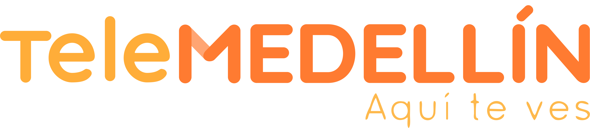

Espejo Mágico
Tour Telemedellín

UPB · IDED · Taller 7 Entretenimiento Digital · Tour Telemedellín
←
Volver
Pinza para continuar
Presiona ESC para volver
✓
Checkpoint
Muestra el objeto a la cámara
Acerca el objeto a la cámara
¡Así queda tu look!
Prueba el maquillaje
3
✨ Explora tu look — cuando estés listo, pinza el botón de cámara
← Volver
Tomar otra
60
seg